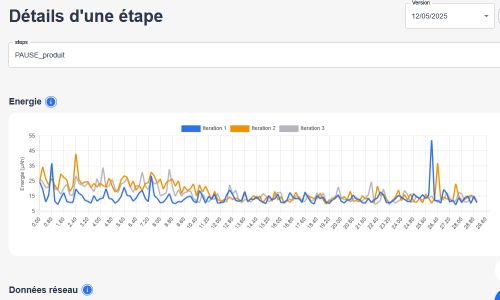
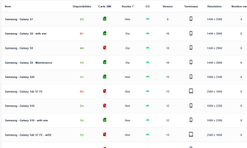
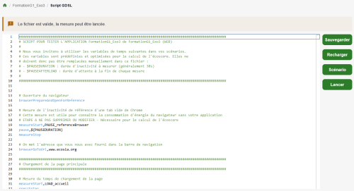
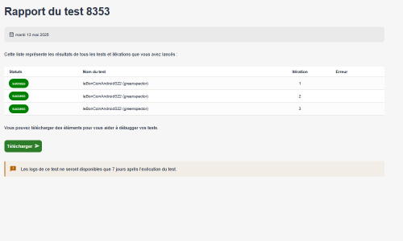
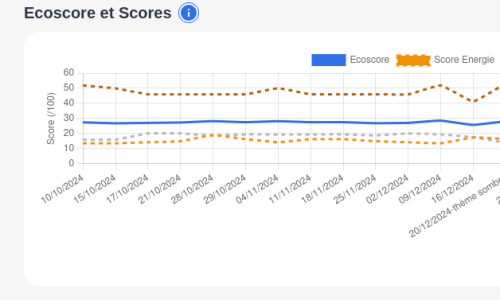

Reconnaissance
Reconnu dès 2020 par la Fondation Solar Impulse parmi les 1000+ « solutions efficientes pour protéger l'environnement ».
Greenspector Studio
Greenspector Studio permet d'identifier très rapidement les bugs de performance de vos applications web et mobile.
Investigation performance
Avec Greenspector Studio, c'est très facile de mener l'enquête. Lancez des mesures fiables, identifiez les fonctionnalités qui posent problème, corrigez.
Utilisez votre outil de profiling favori à bon escient : il est puissant mais chronophage. Avec Greenspector Studio, vous savez ce que vous cherchez.
À chaque release, maintenez les exigences matérielles (batterie, CPU, RAM, data…) sous contrôle pour garder vos terminaux plus longtemps et faire des économies.
Mesure batterie
Greenspector Studio mesure la consommation de batterie tout au long de votre parcours utilisateur, tel que vous l'avez défini, de manière hyper-précise (mesurée en µAh/s toutes les 200 ms !). Ainsi vous identifiez facilement les points de surconsommation.

Conditions terrain
Sélectionnez le modèle de terminal et la connexion réseau qui correspondent à vos besoins.
Sur terminal grand public ou sur un terminal de votre propre flotte métier, avec ou sans votre MDM/EMM installé, en réseau WiFi ou GSM… Obtenez un diagnostic au plus près des conditions du terrain.
Et puisque c'est une solution SaaS, vous pouvez déclencher tous les tests depuis votre CI/CD (en savoir plus).

Automatisation
Les capacités d'automatisation en GDSL permettent d'évaluer le logiciel dans différentes situations : modification des paramètres (luminosité, activation des interfaces…), choix d'appareils, sélection du réseau…
Lancez facilement des tests automatisés variés pour analyser les conditions dans lesquelles surviennent les défauts.

Rapports de test
Une erreur, un plantage ? Accédez aux rapports de test, consultez les captures d'écrans et comprenez ce qui s'est passé.

Maîtrise hardware
Pourquoi prendre le risque d'un bug énergétique en production ? Validez avant chaque release, et gardez un œil sur les tendances de long terme.
En maîtrisant la pression sur le matériel, vous pourrez garder vos terminaux plus longtemps et réaliser ainsi des économies substantielles pour votre budget et pour l'environnement.

Standards
Reconnu dès 2020 par la Fondation Solar Impulse parmi les 1000+ « solutions efficientes pour protéger l'environnement ».
Nos innovations sont le fruit de notre R&D, exposées dans de nombreux articles et conférences internationales.
ACV (ISO 14040), SCI de Green Software Foundation, RCP ADEME…
Références


Certification Or EcoVadis, score de 84/100 : Greenspector fait partie des 5 % des entreprises les plus performantes du référentiel mondial.